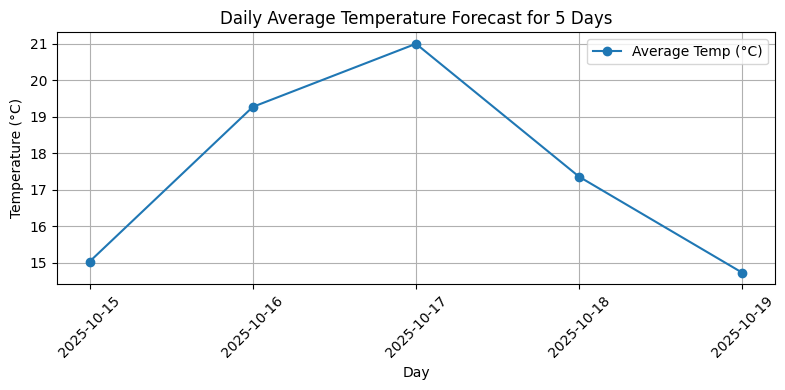

04 / Python
Can a notebook answer “do I need an umbrella tomorrow?”
WeatherWise is a console weather advisor I built in Python. It pulls a five-day forecast from OpenWeatherMap, folds the 3-hourly readings into daily summaries, charts them, and hands a plain-English question plus the forecast to a language model for an answer.
seven required notebook sections
summarised into daily highs, lows and rain
(the brief asked for five)

The question
The brief asked for a “Weather Advisor”: fetch weather for a place the user names, show current conditions and a forecast, draw at least two charts, and let people ask questions in ordinary English instead of reading a table. It also gave a choice of data source. The simplest was a wrapper library over wttr.in; the hardest was a commercial API with your own key and error handling. I picked the hardest one, OpenWeatherMap, because handling a real API key, a real JSON payload and real failure cases is closer to what analytics work actually looks like.
The data
OpenWeatherMap’s free forecast endpoint does not return days. It returns 40 readings, one every three hours, each with its own temperature, “feels like”, description, wind and, if any, rain over the previous three hours. Most of the data work in this project is turning that into something a person can read.
- Fetch.
Get_data_from_Web(city, units)reads the key from an environment variable (never hard-coded), builds the request, and turns every failure into a dictionary with anerrorkey rather than a crash: missing key, unknown city, HTTP error, network drop. - Group.
get_weather_data(city, forecast_days)clamps the day count to 1–5, splits the readings by calendar date, and keeps only the next N dates. - Summarise.
_process_daily_forecast_items()collapses each day’s eight readings into a maximum, a minimum, total rainfall in millimetres, and the description from the reading closest to midday. - Snapshot. The first reading of today stands in for “current conditions”, with wind converted from m/s to km/h. That avoids a second API call at the cost of some accuracy, which I note under Limitations.
What it does
The interface is a numbered console menu built with pyinputplus. You type a city once, then choose from five options:
Option 4 is two functions working together. parse_weather_question() uses keyword and regular-expression matching to pull out the attribute (temperature, precipitation or wind), the day (today or tomorrow) and a location from phrases like “in Melbourne”. generate_weather_response() then writes the current snapshot and every daily summary into a text block, appends the user’s original question, and sends the whole thing to a llama3.2 model through the hands-on-ai library. The model answers from the data it was given, not from memory.
How I worked with AI
Thirty per cent of the mark was for how deliberately I used AI tools, not just whether the code ran. I logged ten conversations with ChatGPT (the brief required five), one per component, and wrote up four before-and-after examples in Prompting.md. The pattern in every conversation was the same: restate the goal in my own words, ask for a structure before any code, then challenge the first answer.
-
01
API keys. The first draft hard-coded the key in the notebook. I asked why that was a problem and what happens if a user forgets to set one; the result was environment variables plus an explicit error message when the key is missing.
-
02
Daily summaries. The AI’s first
get_weather_data()just returned the raw API JSON. I pushed for input validation, grouping by date, a consistenterrorfield, and a “current” snapshot, and asked about the trade-off of taking that snapshot from the forecast instead of making a second call. -
03
Precipitation chart. The first version was a line chart that crashed on missing data. The final one is a bar chart that falls back to summing hourly values and treats anything non-numeric as zero.
-
04
Question parser. The first attempt took the last word of the sentence as the city. The final one recognises attribute, time and location separately, and returns a fixed dictionary shape the rest of the program can rely on.
I also wrote one component, Get_data_from_Web(), using the unit’s six-step method end to end: restate, define inputs and outputs, work the edge cases by hand, pseudocode, implement, then a test plan covering a good city, a bad city, a bad key, and no internet.
What I took from it
- The part I am proudest of is the data layer and the menu: getting a commercial API to return something a person can read, and wrapping it so a wrong city name gives a sentence instead of a stack trace.
- A test cell with fake three-day data let me check the charts, the parser and the response function without spending API calls, which made iterating much faster.
- Given more time I would move from the console menu to ipywidgets, add UV index to the menu, and widen the parser beyond today, tomorrow and three attributes.
Limitations
- The parser is rule-based. It only understands “today” and “tomorrow”, three attributes, and a location introduced by “in”, “for” or “at”. Anything else falls through to the language model with no structure attached.
- “Current” is not live. It is the first 3-hourly forecast slot for today, so it can be a couple of hours stale. Humidity and UV are not shown because that endpoint does not provide them in the summary.
- No caching. Each menu choice refetches the forecast. OpenWeatherMap’s free tier is rate-limited, so heavy use would eventually be refused. The brief listed caching as a bonus feature and I did not get to it.
- Dates use the notebook’s clock, not the city’s time zone, so “today” for a city far from the server can be off by a day near midnight.
- The AI answer depends on an external server and a course-supplied key, so option 4 will not work outside that environment without reconfiguring it.